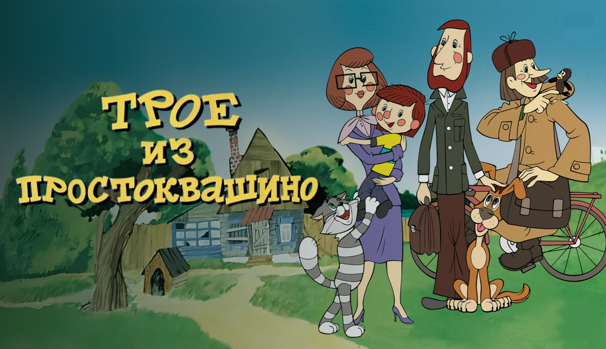

Soviet animation · 1978
Three from Prostokvashino

Three from Prostokvashino is a 1978 Soviet animated film based on the 1974 children's book Uncle Fedya, His Dog, and His Cat by Eduard Uspensky. The main character is a six-year-old boy who is called "Uncle Fyodor", because he is very serious. After his parents refuse to let him keep the talking cat Matroskin, Uncle Fyodor leaves home. With the dog Sharik, the three set up a home in the country village Prostokvashino. There they have many adventures, some involving the local postman, Pechkin.
Watch the film
Video will appear hereAdd your video file to this folder and
name it
video.mp4.